It’s a challenge to announce the “features” of a CommCare mobile release. On the mobile team we’re extremely excited about our recent 2.0 release because it represents a total restructuring of our application engine, but all of that excitement is all in potential! When we write new functionality into the engine, it must be unlocked by the HQ app builder to become a “feature” for folks to actually take advantage of (without some messy custom app config files anyway).
Fortunately, there’s a great set of these new application features already in HQ along with the 2.0 release. To show you some of them I’m going to walk through making an application to track some of the Dev Team’s favorite eateries around our office. I’m going to use a combination of new and lesser known features in the app builder to do some stuff you may not have known CommCare could do. Keep an eye out for other new app design options in the next couple of months, though! We’re barely scratching the surface.
Lunch around Dimagi’s Cambridge office is a mess of possibilities. We’re in a quandary when we need to have a team lunch since it’s tough to keep track of options. Fortunately, we have CommCare. I’m going to make an app to keep track of some restaurants, and share those listings amongst a bunch of people (like Hungry Hungry Coders).
First, I fired up HQ and created a new 2.0 app. On the app configuration screen here, you might notice a few new things (hopefully you will, anyway, because I’ve highlighted them)
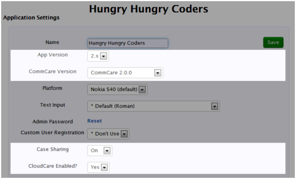
This app’s got two big things going for it.
- Case Sharing is a new feature which allows different users to share their case lists with each other by syncing with the CommCare HQ server. We’ll use this to share our list of restaurants between everyone who works in the office.
- CloudCare is the web-powered front end client for CommCare. Since we’re on our computers a lot of the time, it makes sense for us to register a lot of these places without a mobile device.
Now that we’ve enabled the core features of our app, I’m going to make our forms. First we need to be able to add a restaurant to our list
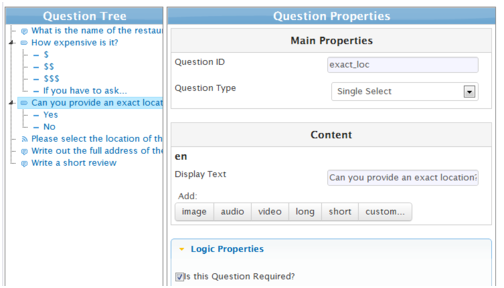
We’re going to keep track of a few things about each place. The name, how expensive it is, a quick review, and perhaps most importantly, a Geopoint Question, which is HQ speak for the GPS location of the joint. I added a question for whether or not you wanted to register the place using its GPS location or by writing out an address. Both will work for our app.
Now we also want to be able to manage each of these listings, so we’ll make a form to update one for a restaurant. For now we’ll focus on the most important aspects: which are being able to remove the listing if a place closes down, and being able to update the latest review. I want to be able to attach a date and some text for the review, so I put them inside of a Group and set the Display Condition for my question “Do you want to write a review” on that group so I don’t have to set it on each question individually.
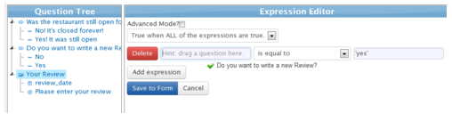
Alright, so the forms are done, time to set up our case list so we can look at ’em. We’ve got data saved in a few different types of formats here:
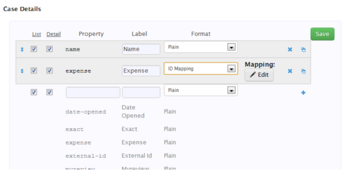
For instance, our “expense” field is actually a mapping between the data values we record (the numbers 1,2,3, and 4) and the text we use to represent them (“$”‘s). To set this up we can set the format to ID Mapping and set up what the display text should be for each. If our app was available in a couple different languages, we could set this mapping up for each language.
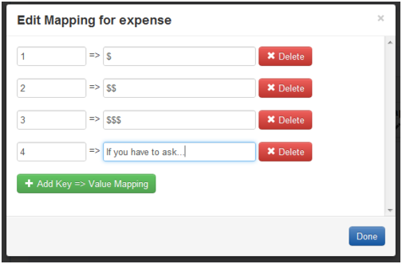
I noticed that after I added the review field, I seemed to have accidentally named the updated review and the original review field different things, since there’s both a “review” and a “myreview” property.
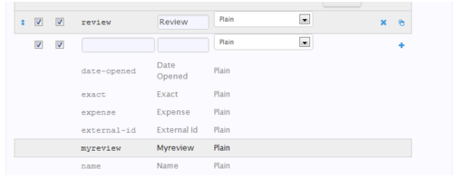
I’ll go ahead and change the registration field to be “review” so they are consistent. The list at the bottom of the case details screen shows all of the case properties that the module knows about, so it’s good to check there to see if you have any extras.
The final thing we want to configure here is also new. We want to tell CommCare that the two fields we’re using to capture the location of the restaurant represent an Address. How each CommCare client handles this might be slightly different, but when possible the app will do some cool stuff with that info since it knows it’s a location.
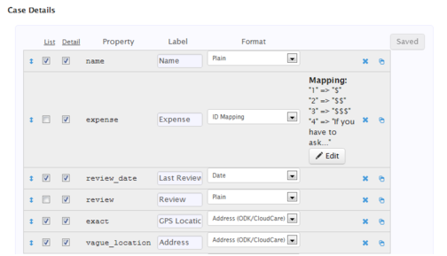
So! Our app is now done, but we need to add some users so we can log in and start sharing our favorite places. We’ll create a couple users, “alice”, and “bob”. Since we’re using the new Case Sharing feature, we also need to complete one additional step. In order to know who to share cases with, we need to add them together into Groups.
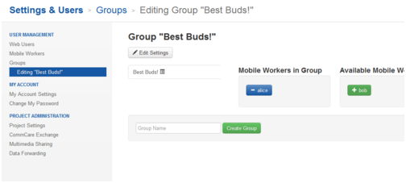
Here I’ve gone to the groups page and started a new group that I’ll add both users into. By default a group in HQ is a Reporting Group, which means that you can view reports for all of those users together. In this case, though, we want to change that to be a Case Sharing Group by clicking the Edit Settings button.
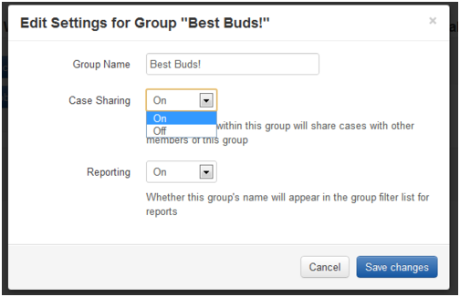
Great! So now everything should be set. Alice is ready to share her restaurant opinions with her best buds.
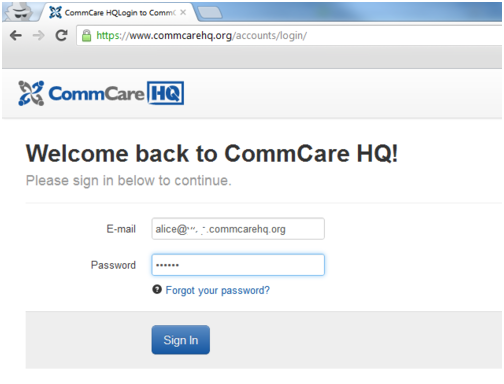
Pro-Tip, I’ve navigated back to CommCare HQ in one of Chrome’s Incognito Tabs, here. This will let me stay logged in as my user in my normal browser, but be logged in as Alice for testing out this app.
After logging in, Alice is in CloudCare. Our app loads up, and we navigate to the Restaurant Registration form. First up, Alice is going to register Picante, a local Mexican place. Since we added the Geopoint question, Alice can pinpoint the restaurant’s location with her crosshairs.
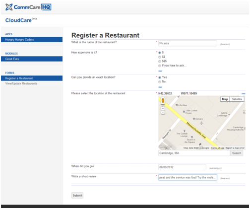
Everything looks good. Our very first submission!
But no one uses an app to just type in data. It’s time to consider Bob. Bob’s not as big on working from his computer as Alice is. He’s planning on working in the park near the office for the day, but first he’s going to download this app to keep tabs on recommended places to eat.
First, he downloads the newest version of CommCare ODK 2.0 to his Android device, clicks on the Scan Application Barcode button, and downloads the latest build of the Hungry Hungry Coders application from Download to CommCare ODK link on the build from the HQ Release Manager.
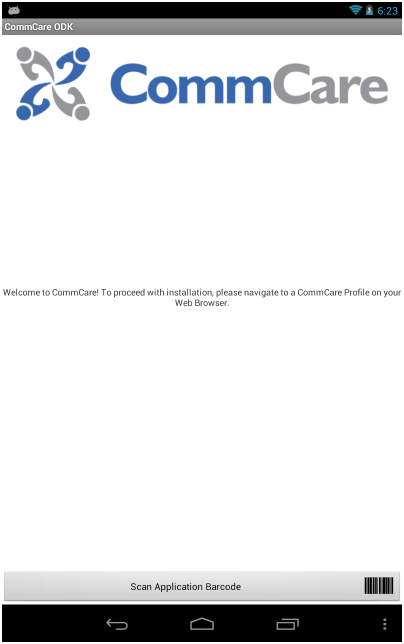
Then he enters his username and password and the app fetches bob’s info (including the shared cases) from CommCare HQ.
Time to figure out where to go. Bob navigates to the View/Edit Restaurants menu option, and sees that Alice has been busy!
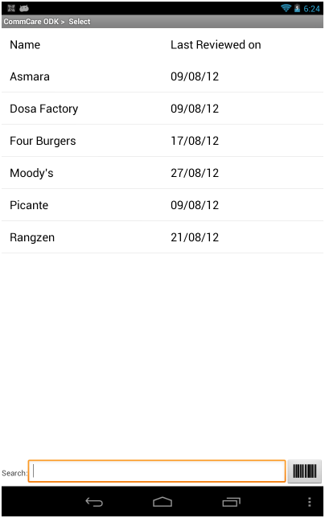
That’s a lot of choices. Fortunately, it’s easy enough to figure out what’s nearby. From the settings screen
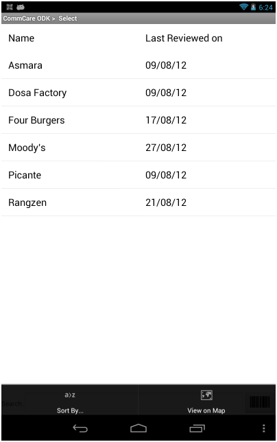
Bob clicks the View on Map option to get a listing
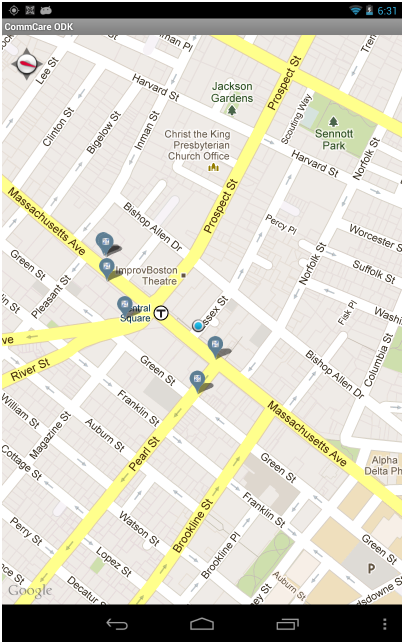
(Heads up! On some androids it’s been reported that the first time this screen gets pulled up Android or CommCareODK has a problem. We’re looking into it! In the mean time, it should work fine if you just log in and try again).
Bob recognizes most of these places, but isn’t sure if he’s seen the one on Western ave before, so he selects it to look at the details
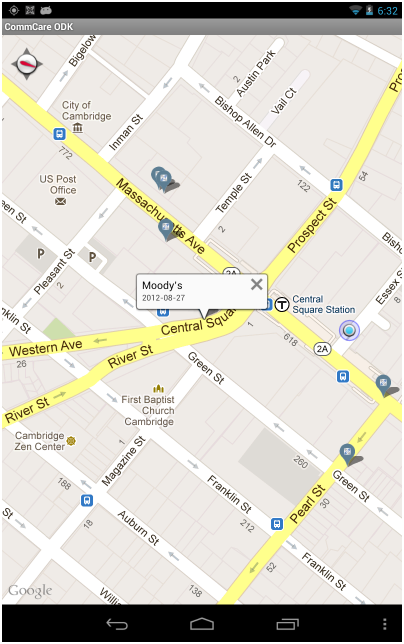
and then checks the place out. Afterwards to do his part, he fills out his own review, sends it up to the server, and it’s shared back with the whole group.
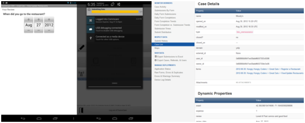
Whew! Not too bad for a quick exercise. And there’s a lot of places to go from here! What if we wanted to call to see if a place is open? Did you know that similar to the addresses, you can specify that a field on the Case Details list is a Phone Number? If you do so, on both the Android and J2ME (Nokia, etc) platforms, when you are looking at the details screen you can then call those numbers.
Speaking of J2ME phones. Not a lot of them have a GPS in them. If Alice and Bob’s friend Charlie has a J2ME phone he won’t be able to look at the map for the restaurants (Sorry, Charlie!). That doesn’t mean he can’t let them know about his favorites, though! Earlier we specified two fields as addresses, one which stored a GPS location, and the other let you type an address out. Up to this point we’ve only used the GPS, but CommCare ODK’s case map will also do a geolookup on a written out address, so as long as he knows the streets, he can share as well.
What about variety? We could also record the date every time you go to a restaurant, and then sort the case list by that date so restaurants you haven’t been to in a while show up first. If you use the Search Only format for that field, it won’t even be visible in the case list (But can still be used to sort). If you place it as the first item in the Case Details list order, it’ll be used to sort by default. You and your friends could be getting a list sorted to encourage you to go to places you haven’t been to for a while and not even realize it!
Checking out restaurants is a far cry from the awesome development and health projects that CommCare is built for, but hopefully this example has shown you some techniques you haven’t seen before in building CommCare apps, and possibly even given you some ideas for things you could add to your own projects. We’ll keep sharing demos of different apps with you as new features become available, but in the mean time there’s a ton of other features to explore in HQ right now! And if you have questions about any of them, we’re always here to help.
P.S. This demo will be available for you to play with soon through the CommCare App Exchange, once it is live. Stay tuned!
Clayton Sims is a Senior Developer working out of Dimagi’s Boston office. He leads the development of CommCare mobile, which is available on Android and J2ME platforms. To learn more about CommCare or to follow along with this tutorial, go to www.commcarehq.org.